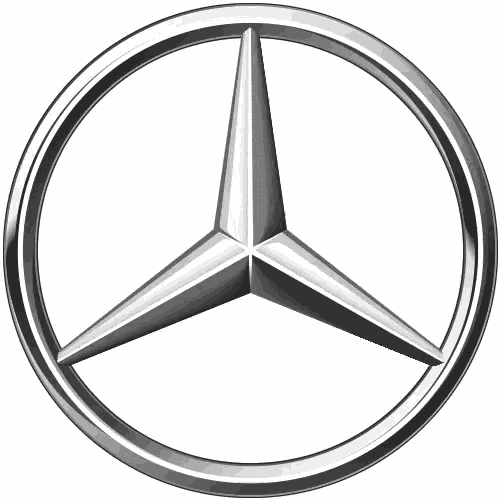

Модели

|

|

|

|

|
Mercedes-Benz W221 S-Class предлагает широкий ассортимент моделей, включая S350, S500 и S600. Эти автомобили известны своим роскошным интерьером, передовыми технологиями и выдающейся производительностью. Выпускался с бензиновыми (S 300–S 600), дизельными (S 320 CDI, S 350 CDI) и гибридными (S 400 Hybrid) двигателями, а также в высокопроизводительных версиях AMG (S 63 и S 65). После рестайлинга в 2009 году обновился дизайн, двигатели стали мощнее и экономичнее. Оснащение включало адаптивную подвеску, систему ночного видения и передовые системы безопасности.
История
|  |
Mercedes-Benz W221 была представлена в 2005 году и стала символом роскоши и инноваций. Этот автомобиль был разработан с акцентом на комфорт и безопасность, что сделало его одним из самых популярных в своем классе.
Контакты
Porsche, свяжитесь со мной по электронной почте: steave1drolle@gmail.com